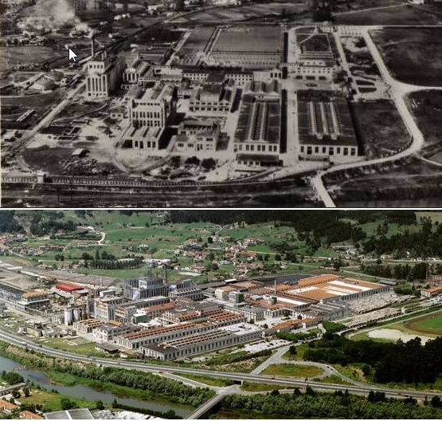

Sniace, S.A. fue constituida el 1 de diciembre de 1939 con domicilio social en Madrid, sus instalaciones industriales y oficinas administrativas en Torrelavega (Cantabria) y una oficina de ventas en Barcelona.

La fábrica de viscosa comienza su producción en 1946 mientras que la fábrica de celulosa lo haría en 1950. Ambas son ampliadas hasta sus capacidades actuales en los años 1983 y 1984 respectivamente. La central térmica del grupo se pone en funcionamiento en 1985. En 1986 alcanza un acuerdo con el grupo noruego Borregaard para constituir la sociedad Lignotech Ibérica, especializada en la venta de lignosulfanatos para distintas aplicaciones y sectores. En mayo de 1989 se constituyó la sociedad Bosques de Cantabria (BOSCAN), con el objeto de que prestara sus servicios al patrimonio forestal de Sniace, entre los que se encuentran las labores de repoblación, conservación, mejoras, aprovechamientos, prevención y combate de incendios.
El Grupo Sniace comienza una actividad de diversificación hacia el sector de las energías renovables en el año 1999. Sus dos principales objetivos residen en la construcción de una planta de coogeneración que permita reducir tanto los costes energéticos del complejo industrial como la utilización del carbón como fuente térmica, y el desarrollo de un proyecto de producción de bioetanol en su recinto fabril en Torrelavega. En el año 2001 termina la construcción de una planta de coogeneración de 80 MWh. Planta que incrementaría hasta los 100 MWh la capacidad instalada del grupo y le permitiría vender a la red los excedentes energéticos.
En 2013, debido la alta deuda y las bajas expectativas del grupo se procede a realizar un ERE con el fin de reducir sus gastos. Esta no era la primera gran crisis ya que en 1983 se quería realizar un ERE todavía más cuantiosos que afectase a 800 trabajadores y al final no se ejecuto y la fábrica no cerro. La deuda en aquel entonces era de 560 millones de pesetas, unos 6 millones de euros actualmente. Y es que en esta ocasión la deuda del grupo alcanzaba 10 veces el tamaño de la empresa, unos 150 millones de euros.
Tras 5 años cerrada la planta reabriría en 2017 con 360 trabajadores. Antes de abrirla empezaría a cotizar de vuelta a bolsa y generaría mucha expectación. Los medios darían eco y se crearía una burbuja que dejo pillados a muchísimos pequeños inversores. Al abrir lo haría en 0,025€. Un precio excesivo para una empresa que no había abierto y que tenía muchísimos interrogantes. No tardaría en bajar a los 0,07€, en parte por las ventas de los propios accionistas de la empresa. En mayo del año siguiente volvería a alcanzar esos valores máximos con los que inicio pero no sería más que un espejismo ya que todo esto sería una operación para dejar todavía más pequeños inversores pillados. Y es que rápidamente anunciarían una ampliación de capital, ya en abril de 2016.
El principal artífice de estas operaciones sería el presidente Blas Mezquita, persona que estuvo al mando antes de la reapertura y que fue uno de los responsables del cierre. Ya a estas alturas cualquier inversor que estuviera dentro debería haber previsto cualquier tipo de maniobra y es que el susodicho Mezquita no paraba de hablar en los medios de la buena marcha de Sniace y de que pronto se llegaría a alcanzar los 70 céntimos de euro por acción y una capitalización cercana a los 100 millones pero no hablaba de los pésimos resultados del grupo, con una deuda ascendente y la fábrica principal todavía sin abrir debido a los trabajos.
Toda esta operación no era más que realizar la apertura de la planta con el dinero de accionistas. Una vez abierta los resultados no irían según lo esperado y se realizaría una nueva ampliación e capital. En octubre de 2016 se alcanzarían los nuevos máximos cercanos a los 0,035€, 0,026€ al cambio actual y bajaría hasta la mitad del valor. Todo esto sin noticias aparentes que reflejen los cambios siendo un valor que no se puede seguir ni prever su comportamiento. Además el grupo no solía dar información cuando convenía y la cotización se estancaba siendo totalmente opaca la comunicación con los accionistas a través de la empresa y también a través de la CNMV. Solamente se presentarían los resultados obligatorios cada cuatrimestre.
En 2018 una nueva ampliación tendría lugar y dejaría la reputación de la empresa por los suelos ya que en 2017 todo el capital que se había aumentado debería ir ya a poner en funcionamiento la que se suponía iba a ser el buque insignia de la empresa. Una planta de viscosa moderna que iba a generar unas 35.000 toneladas de lignita anuales y aumentar la producción de celulosa de la otra planta en más de un 40%. Todo esto no funcionaría como tenían esperado ya que el grupo arrojo unas pérdidas cuantiosas. Esto propiciaría que tras la presentación de resultados con una cierta mejoría tras la andadura de la planta, un descenso del valor de los títulos de la empresa equivalente al 50%. La huida de inversores sería grande y quedarían atrapados muchos de los primeros inversores que habían acudido a las dos ampliaciones anteriores. Muchos de ellos no acudirían a la ampliación que sería del doble de la capitalización, el máximo castigo permitido por la CNMV. Si sobrepasa esa cifra es una dilución y su convocatoria tiene que ser de carácter excepcional.
Así pues los dos principales accionistas de la empresa no tendrían más remedio que suscribir todos los derechos y muchos de otros accionistas, pasando a tener un gran agujero en sus cuentas.
La acción nueva tendría un precio de 0,10€ vida derechos, es decir, 0,11€ en total. Realizando pues un descenso adicional de otro 50% (0,024€-> 0,014€ -> 0,011€). Este valor neutro no es más que el valor anterior de capitalización de la empresa que ronda los 70 millones de euros. Por lo cual se desprende que año a año la empresa ha ido teniendo unas perdidas de 35 millones. Siendo machacado todo el capital nuevo que recibía por parte de los inversores en sueldos y otros menesteres. Por si fuera poco la acción tras la ampliación lejos de subir comenzaría un descenso sin explicación por parte de la empresa que llevaría los títulos a los 0,07€ en octubre y en diciembre de 2018.
En 2019 ocurriría lo que hubiera sido lógico mucho tiempo antes, la dimisión del presidente de Sniace. En este caso por la posible imputación en delitos contra el medio ambiente una década atrás. La causa parece ridícula ya que lo más lógico habría sido dimitir por la pésima gestión y no poner otras excusas. Lo más impactante fueron las subidas de sueldo del presidente y los bonuses que recibía año tras año, todo a cuenta del accionista. Así pues la empresa presentaría unos resultados anuales de 2018 bastante negativos en febrero de este 2019, pero bastante lejos de lo que se esperaban (cerca de 15 millones de pérdidas). Y ya con una nueva dirección habrían llevado un posible préstamo por parte de bancos y entidades, ya que una nueva ampliación no sería viable ante la negativa de los dos principales accionistas, Félix Revuelta y Sabino García. Y es que una nueva ampliación no sería suscrita por casi ningún accionista que llevan ya unas perdidas que superan el 70% de media de lo aportado.
Así pues la acción transcurre sin rumbo claro con una capitalización inferior a la de años anteriores. Esto no tiene sentido ya que ahora es cuando realmente la empresa esta empezando a funcionar y empieza a dar signos de que podría ya arrojar un EBDITA positivo. El hecho responde más al castigo de inversores y fondos a la falta de información de la empresa y a los sucesivos engaños por parte de la anterior dirección.
| ### | 2015 | 2016 | 2017 | 2018 |
|---|---|---|---|---|
| Deuda/ Caja empresa | Deuda Total (M) | - | 25,51 | 18,5 | 49 |
| Beneficio/valor acción | ||||
| Capitalización(M) | 15,2 | 73,3 | 69,1 | 45,6 |
| EBDITA (M) | -5,72 | -6,71 | -5,45 | -7,32 |
| Ingresos (M) | 1,17 | 9,94 | 44,3 | 67,56 |
| Beneficio Neto (M) | 55 | -7,8 | -3,7 | -5 |
De la tabla de fundamentales observamos como el EBIDTA negativo y unos beneficios netos negativos año tras año es la nota más disonante de la compañía. Tras abrir es verdad que el primer año y el segundo se puede achacar a la puesta a punto de la empresa pero ya han pasado 3 años desde que comenzará la actividad y se han inyectado muchos millones mediante ampliaciones de capital para que las cosas sigan igual. El único dato positivo lo da el aumento de los ingresos que ha sido bastante grande. Si bien no necesariamente es positivo ya que pese al gran aumento de ingresos nos encontramos que no se traduce en beneficio luego la rentabilidad del trabajo realizado en la empresa empieza a ser cuestionable. Debido a la opacidad de la compañía y al cambio de dirección sería prudente dejar transcurrir al menos dos años para ver el nuevo devenir de la empresa y tomar decisiones si tenemos acciones o de invertir en esta empresa si nunca lo hemos hecho.
Si nos fijamos en el gráfico observamos como la cotización desde la reapertura no ha hecho más que bajar. Al principio tuvo varios altibajos típicos de un valor con tan poca capitalización en la que pocos movimientos pueden hacer que fluctué mucho la acción pero luego ya fueron tomando forma. En estos 4 años ha habido 3 ampliaciones de capital que han dañado seriamente la confianza en la acción. Cada ampliación ha costado que la acción se devaluase en un mínimo del 40% como se puede ver en las elipses púrpuras de la imagen. En 2 meses tras la ampliación la acción ha ido cayendo produciéndose una distribución desde 1 mes antes de estos anuncios. Información privilegiada que unos pocos han obtenido para ir subiéndola poco a poco y distribuir en las últimas semanas antes de formalizar el anuncio. En 2017 tras la dilución de la mitad del capital de la empresa en forma de nuevas acciones ya no ha habido vuelta atrás y no ha subido del coste mínimo de la acción nueva (0,11€). Ahora mismo la situación de la empresa es muy delicada ya que debe convertir los ingresos actuales en beneficios y en reducción de deuda si no quiere volver a ver el fantasma de un concurso de acreedores. Nadie ya va a acudir a salvar la empresa, ni accionistas ni bancos por lo que la estrategia de este valor es clara.
El valor ahora esta triangulando entre los 0,083€ y los 0,10€. Según el gráfico a finales de abril debería haber o una caída o una subida al borde de 0,10€. Pero este valor no toma un técnico confiable así que cualquier predicción es en vano.
Estrategia: Mantener las acciones intentado reducir posiciones en momentos de grandes subidas o rebotes y esperar acontecimientos.

Usando este sitio web aceptas nuestros Terminos y condiciones. Por favor Aceptar esto antes de usar el sitio web.
© 2016 - All Rights Reserved - Diseñada por Sergio López Martínez
El sitio se mantiene gracias a la publicidad, por favor Desactiva Adblock para seguir navegando
He desactivado Adblock![[Valid RSS]](https://www.feedvalidator.org/images/valid-rss-rogers.png "Validate my RSS feed")